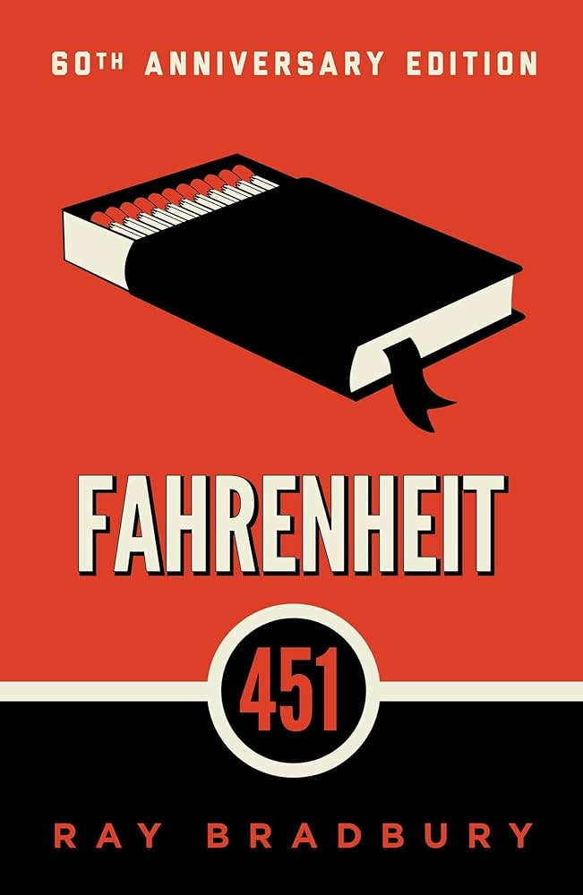
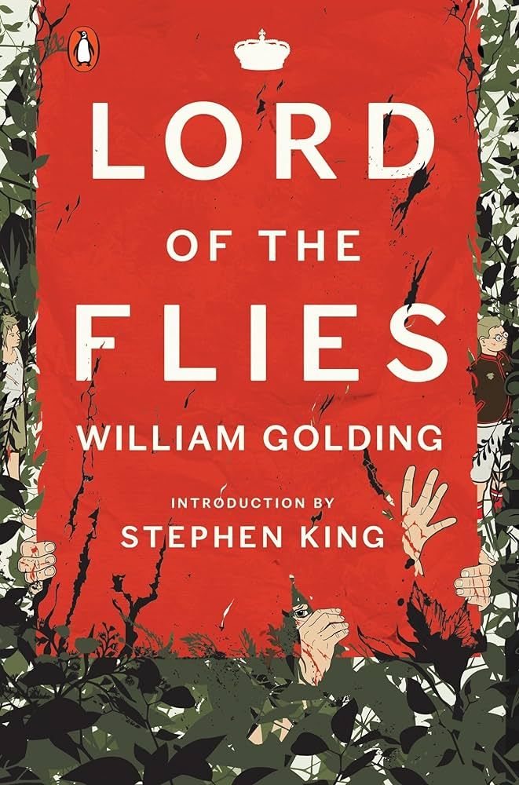
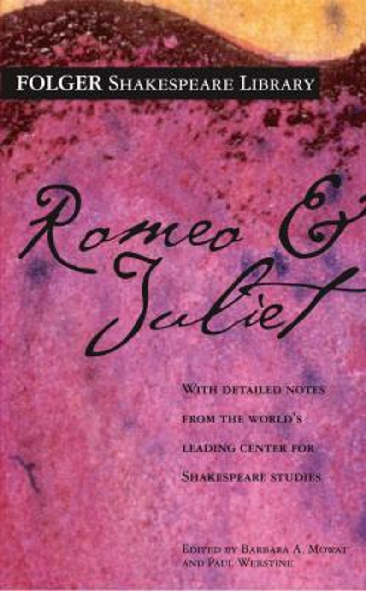
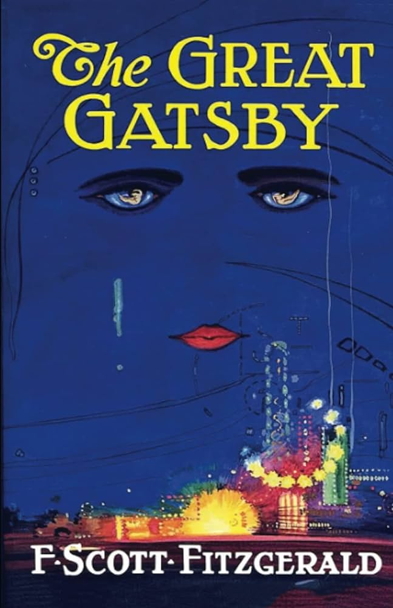
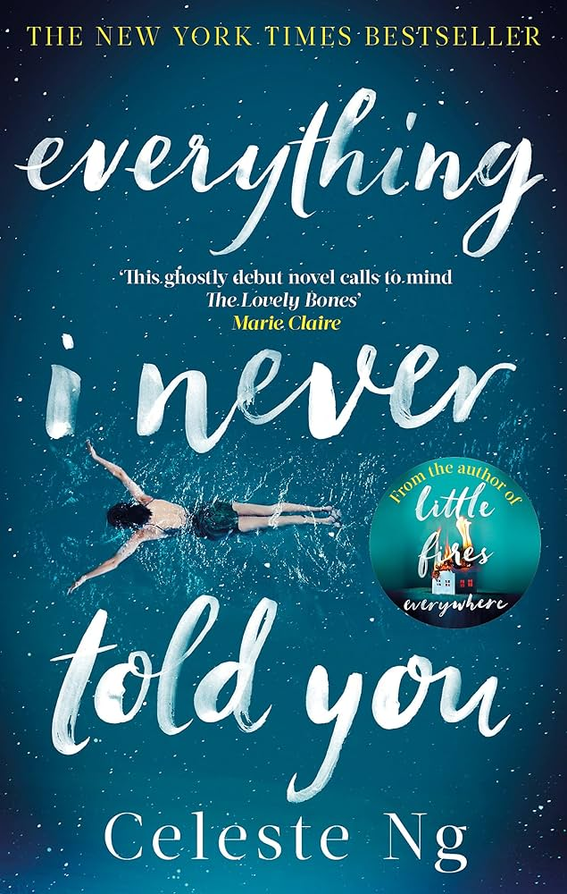
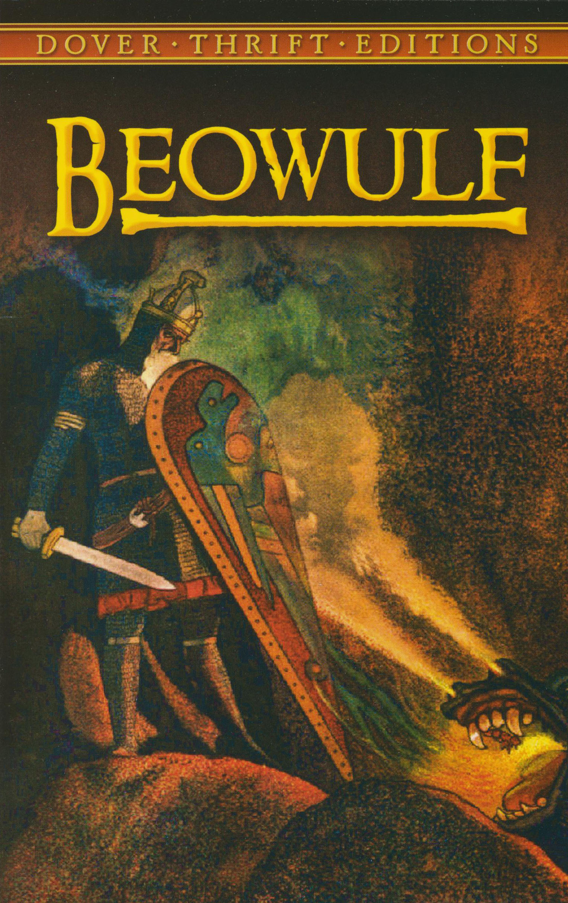
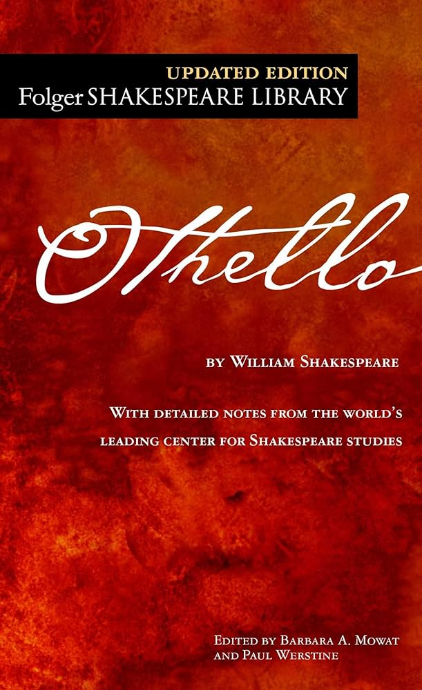
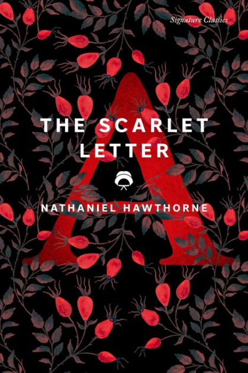
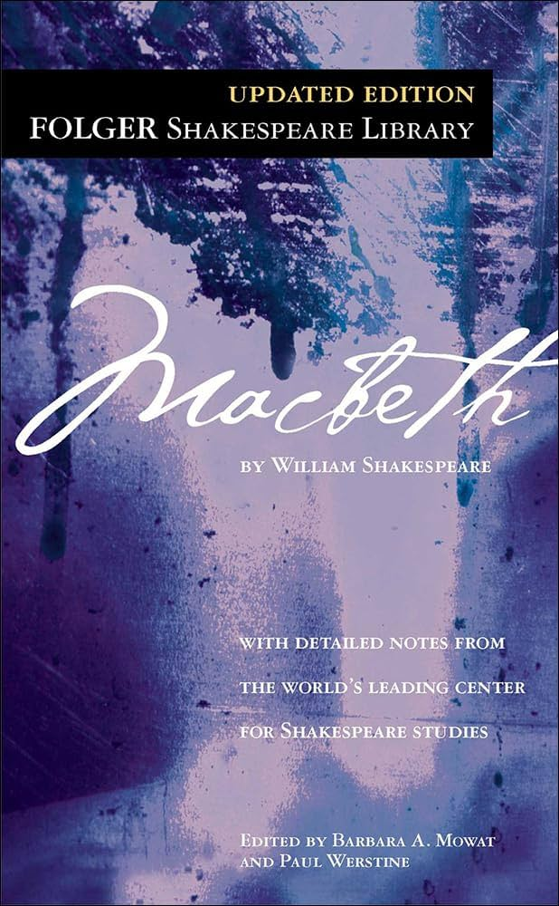

Books I remember having to read in high school! 😄
I honestly don't read much unless I need to for class.
The last time I remember reading a book for fun and
not for school was in fourth grade (anyone remember
the warrior cat series?).
9th grade
-
Fahrenheit 451, by Ray Bradbury

-
The Odyssey, by Homer

-
Lord of the Flies, by William Golding

-
Romeo and Juliet, by William Shakespeare

10th grade
-
To Kill a Mockingbird, by Harper Lee

-
The Great Gatsby, by F. Scott Fitzgerald

-
Everything I Never Told You, by Celeste Ng

11th grade
-
The Catcher in the Rye, by J.D. Salinger

-
Beowulf, unknown author

-
Othello, by William Shakespeare

12th grade
-
The Scarlet Letter, by Nathaniel Hawthorne

-
Macbeth, by William Shakespeare

-
Little Women, by Louisa May Alcott